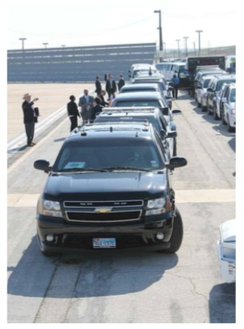

1. Security Guard Services
Wasperlydo provides trained security guards to protect homes, businesses, offices, construction sites, and other properties. Guards can monitor premises, control access, and help prevent theft and unauthorised entry.
Wasperlydo provides trained security guards to protect homes, businesses, offices, construction sites, and other properties. Guards can monitor premises, control access, and help prevent theft and unauthorised entry.

The company can provide CCTV camera installation and monitoring services. CCTV systems help clients monitor their properties and identify unusual or suspicious activity. CCTV and electronic surveillance are commonly used as part of modern security solutions in Botswana.

Mobile patrols involve security personnel regularly checking properties and surrounding areas. This provides a visible security presence and helps identify potential security problems early.